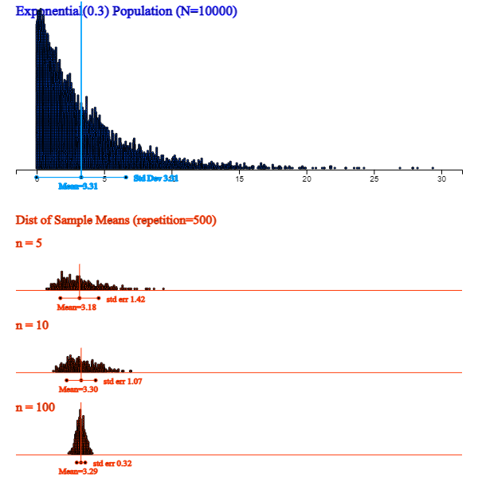
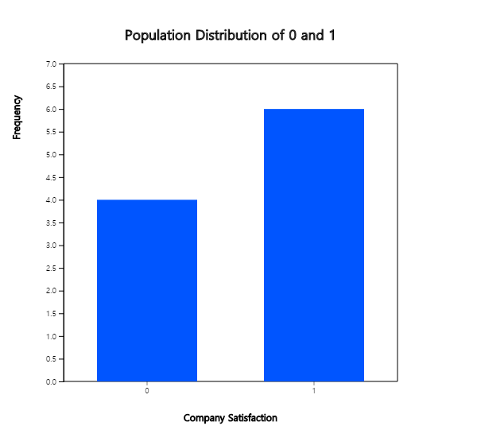
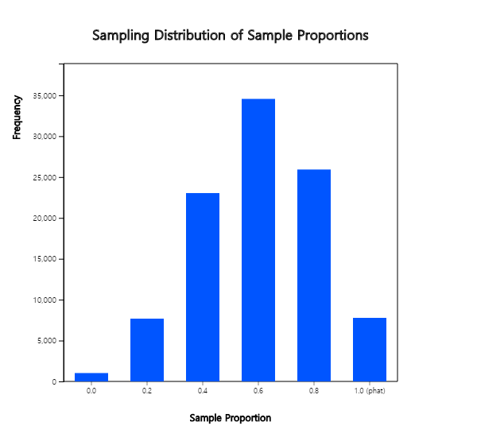
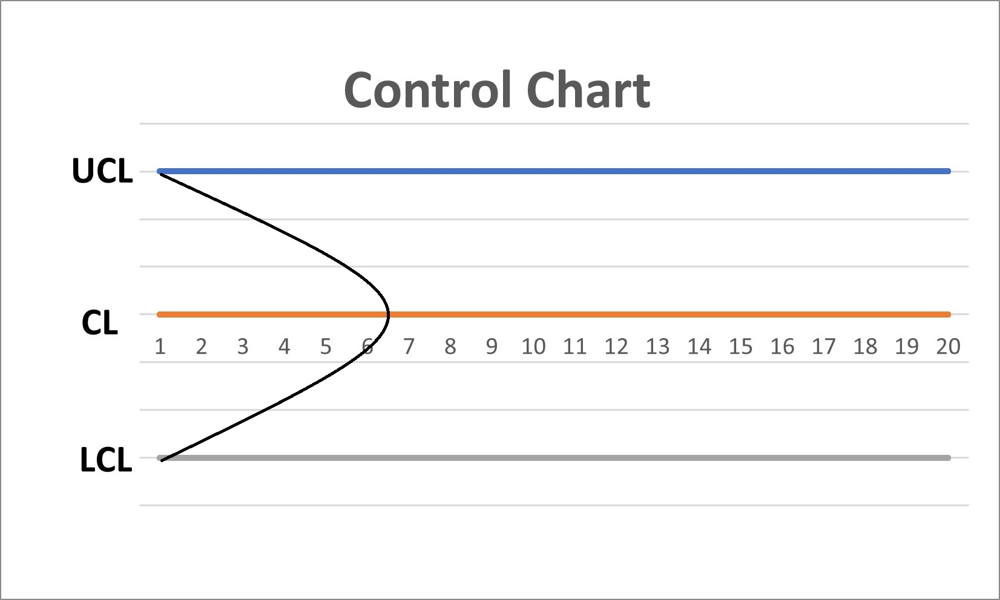

Since a population is generally very large, a survey of the entire population takes lots of time and money. Hence we are trying to estimate characteristics of the population using a set of samples. Estimation of population characteristics using samples is called an inferential statistics. However, there may be some difference between the characteristic of the population and the characteristic of the sample. In order to reduce the difference, several methods of sampling have been studied. The most commonly used one is a simple random sampling which collects samples with the same probability of all elements of the population being selected.
Chapter 6. Sampling Distribution and Estimation
[book] [eStat YouTube Channel]
- 6.1 Simple Random Sampling
- 6.2 Sampling Distribution of Sample Means and Estimation of the Population Mean
- 6.3 Sampling Distribution of Sample Variances and Estimation of the Population Variance
- 6.4 Sampling Distribution of Sample Proportions and Estimation of the Population Proportion
- 6.5 Determination of the Sample Size
- 6.6 Application of Sampling Distribution: Quality Control Chart
- 6.7 Exercise
CHAPTER OBJECTIVES
The power of modern statistics lies in the ability to predict the characteristics of a population with a small number of samples. The sampling methods ares introduced to collect a sample from the population in Section 6.1.Section 6.2 describes the distribution of all possible sample means and its application to estimate the population mean.
Section 6.3 describes the distribution of all possible sample variances and its application to estimate the population variance.
Section 6.4 describes the distribution of all possible sample proportions and its application to estimate the population proportion.
Section 6.5 describes how to determine the sample size to estimate the population mean and population proportion.
Section 6.6 describes an application of sampling distribution to the quality control chart for a production process.
6.1 Simple Random Sampling
[presentation] [video]
Simple Random Sampling
Samples are collected so that all elements of the population are likely to be selected equally.
In case of the simple random sampling, there are two possible ways to collect samples. One is to include an element selected once again in the population (with replacement), and the other is not to include the selected element back into the population (without replacement). However, in practice, almost all sampling is made without replacement.
Some tools may be needed to ensure that each element of the population is selected equally. We usually use a random number table which is a table of numbers from 0 to 9 without special regularity or partiality. Recently, a random number generator by using a computer which uses the uniform distribution on [0, 1] is widely used to produce a random number. 『eStatU』 provide random number generators for Uniform, Normal and two dimensional Normal distributions.
Example 6.1.1
A class has 50 students. Select three of 50 students as samples without replacement by using 『eStatU』.
Answer
In order to select three samples randomly from 50 students, a list of students which assigned serial numbers from one to fifty must be made first. In order to collect samples, select [Random Number Generator] in 『eStatU』 menu. Enter (1 and 50) at the box of ‘Uniform’, ‘Integer (without replacement)’, enter 3 at the box of ‘Number of Data’ and click the [Execute] button as shown in <Figure 6.1.1>. These are the random numbers to select students, but your computer might generate different numbers, because it depends on computer.
[Random Number Generation]
<Figure 6.1.1> 『eStatU』 Uniform random number
If you read the three numbers from located above, you will choose these student numbers as samples.
Generated random numbers may have same numbers. If it is a sampling without replacement, discard the following same number.
Practice 6.1.1
In a university, a survey was planned for students and the list of students which has an id numbered
1 to 1000 was made. Select ten students randomly using 『eStatU』 without replacement.
6.1.1 Sample Survey
Simple random sampling is the basic sampling method for all sample surveys on a population.
When the characteristics of a population are estimated using a sample, a difference occurs
between the estimated value using the sample and the characteristic value of the population,
which is called a sampling error. Many sampling methods have been studied to reduce
this sampling error.
Each element of the population that is the subject of analysis is called an elementary unit or an observational unit because it is the object that is actually observed in the survey. Depending on the sampling method, these elementary units can be selected individually (e.g. simple random sampling method), or a set of elementary units can be selected for convenience of sampling. Therefore, what is selected to construct a sample is called a sampling unit, distinguishing it from an observational unit. In order to select samples by the sampling unit, a table of the sampling units is required, which is called a sampling frame. Describing how to select samples using the sampling frame is called a sampling design.
In order to conduct a good sample survey, it is necessary to define accurately the above terms in advance. Since a sample survey is a method of scientific research, all steps for a sample survey must be planned in advance and carried out according to the plan.
Steps for Sample Survey
Step 1. The objective of the sample survey must be clearly established. It helps you always make decisions that are consistent with the objective even while planning and carrying out the detailed process of a complex survey.
Step 2. Check general matters related to the sample survey. For example, determine whether the same or similar survey has not been conducted in the past or whether the sample survey is appropriate, determine the total cost available and determine the reliability and accuracy of the results.
Step 3. Do the sampling design which includes the most important things such as sampling unit, sample size, sampling method, etc. Also, the cost required for each step is calculated.
Step 4. Conduct the designed sample survey. The reliability and usefulness of the sample survey results depend on the accuracy of observation data. Therefore, in order to obtain accurate data, there must be research on how to prepare and use questionnaires, training and management of interviewers, and interviewing methods.
Step 5. Analyze and summarize the data obtained from the sample survey. Sometimes the cost and workload of this step may be greater than that required to obtain the data, so this should also be anticipated in advance. Then, the entire process is reviewed to identify problems which can be served as a reference for future sample survey.
The following sampling methods are often used in large-scale sample surveys rather than simple random sampling. For detailed information on the estimation and variance of population characteristic values by these sampling methods, please refer to the references as it is beyond the scope of this book.
Stratified Sampling
Stratified sampling method divides the population into an appropriate number of strata and selecting a sample of a fixed size from each stratum using simple random sampling method. For example, if you are interested in the average wage in a population consisting of factory workers, office workerse, and professionals, divide the population into three strata: factory workers, office workers, and professionals. Then, estimate the overall average wage by selecting individuals from each stratum through simple random sampling. Stratification is recommended so that the elements in each stratum are as homogeneous as possible. The variance of the estimated value of stratified sampling is smaller than that of simple random sampling and the cost is reduced. The stratified sampling method has the advantage of being more convenient administratively.
Cluster Sampling
In large-scale sample surveys with a large population, it is difficult to prepare a sampling frame,
expensive to survey widely scattered sampling units, and difficult to manage the survey.
To solve this problem, for example, when trying to investigate entertainment expenditures by household
living in Seoul, if a household (it is called a cluster because there may be many household members)
is the sampling unit, all basic regional administrative units in Seoul are listed and
then some regional units are selected by simple random sampling. In the selected regional units,
some households are selected by simple random sampling and then survey all members in the household.
The sampling method from a population using a group of elementary units, that is a cluster,
as a sampling unit is called a cluster sampling method.
System Sampling
Suppose you want to get a quick estimate of total sales by examining 2% of a department store's
sales slips, approximately 1000 slips each week. 20 sales slips need to be investigated.
For this purpose, if the sales slips are filed and stored in sales order, one slip is selected
between the first slip and the 50th slip and then continue selections from every 50 slips.
For example, if it was the 7th slip, the next is the 57th, 107th, 157th, ... , 957th slip.
This is called a systematic sampling, in which one slip is selected out of every 50 slips.
Here, 50 is called the sampling interval, and the starting point 7 is called the
random starting point, and can be determined randomly within the sampling interval.
6.2 Sampling Distribution of Sample Means and Estimation of the Population Mean
[presentation] [video]
The purpose of statistical experiments or surveys is to find out some information about a population. Information about the population usually refers to a characteristic value of the population, such as the mean and variance which are called parameters. Since it is so difficult or costly to investigate the population parameters, they are usually estimated by using characteristic values of a set of samples such as the sample mean and sample variance. <Figure 6.2.1> is a simulation to show the relationship between population data of size 10,000 and sample data (approximately 10%) using 『eStatU』 which shows characteristic values of a population are similar to characteristic values of a set of samples.
[Population vs Sample]
<Figure 6.2.1> Simulation to show the relationship between population data and sample data
Characteristic values of a set of samples are called sample statistic and the distribution of the sample statistic is called a sampling distribution. The sampling distribution identifies the relationship between the sample statistic and the population parameter and it makes possible to estimate and test a population parameter. In this section, let's first look at the sampling distribution of sample means and find out how to estimate the population mean.
6.2.1 Sampling Distribution of Sample Means
The following example is to find out the sampling distribution of sample means.
Example 6.2.1
Suppose there is a population consisting of five salesman from a company. (Although such a small population does not actually need to be sampled, this is an example to illustrate the sampling distribution of sample means). Consider the number of years of service at this company as a characteristic value of the population and data of five salesman are as follows.
6, 2, 4, 8, 10
1) Obtain the mean and variance of this population.
2) Obtain all possible samples of size two by simple random sampling with replacement from this population and calculate means of each sample. In addition, calculate the mean and variance of all these possible sample means and compare them with the mean and variance of the population.
3) Prepare a frequency distribution of all possible sample means and draw a bar graph. Compare this bar graph with the bar graph of the population distribution.
Answer
1) The mean and variance of the population is μ = 6, \( σ^2 \) = 8.
2) The number of all possible samples with replacement is 5 × 5 = 25. Table 6.2.1 shows all possible samples and their sample means (\(\small \overline x \)).
Table 6.2.1 All possible samples of size 2 with replacement from the population and their sample means
| Sample | Sample Mean \(\small \overline X \) |
|---|---|
| 2, 2 | 2 |
| 2, 4 | 3 |
| 2, 6 | 4 |
| 2, 8 | 5 |
| 2,10 | 6 |
| 4, 2 | 3 |
| 4, 4 | 4 |
| 4, 6 | 5 |
| 4, 8 | 6 |
| 4,10 | 7 |
| 6, 2 | 4 |
| 6, 4 | 5 |
| 6, 6 | 6 |
| 6, 8 | 7 |
| 6,10 | 8 |
| 8, 2 | 5 |
| 8, 4 | 6 |
| 8, 6 | 7 |
| 8, 8 | 8 |
| 8,10 | 9 |
| 10,2 | 6 |
| 10,4 | 7 |
| 10,6 | 8 |
| 10,8 | 9 |
| 10,10 | 10 |
Some of these sample means are exactly the same as the population mean μ = 6, but some others such as 2 or 10 are significantly different.
The mean of all possible 25 sample means (indicated by \(\small μ_{\overline X} \)) in Table 6.2.1 is also 6 and
the variance (indicated by \(\small σ_{\overline X}^2 \)) is 4 as follows:
\( \qquad \small \mu_{\overline X} = \frac { 2 + 3×2 + 4×3 + 5×4 + 6×5 + 7×4 + 8×3 + 9×2 + 10} { 25} = 6 \)
\( \qquad \small \sigma_{\overline X}^2 = \frac {(2-6)^{2} +(3-6)^{2} \times 2 + (4-6)^{2} \times 3 + (5-6)^{2} \times 4 + (6-6)^{2} \times 5 + (7-6)^{2} \times 4 + (8-6)^{2} \times 3 + (9-6)^{2} \times 2 + (10-6)^{2}} {25} = 4 \)
What can be observed here is that the mean of all 25 possible sample means is the same as the population mean.
This fact explained that the sample mean \(\small \overline X\) is an unbiased estimator of the population mean μ.
In addition, the variance of the sample means \(\small σ_{\overline X}^2 \) is the population variance \( σ^2 \) divided by the sample size (\(n\)=2).
3) Table 6.2.2 shows the frequency distribution of sample means in Table 6.2.1. The frequency distribution of all possible sample means is called a sampling distribution of sample means when n = 2. <Figure 6.2.2> shows a bar graph of the population distribution and <Figure 6.2.3> shows the distribution of all possible sample means. As shown in the table, the population mean is 6 and some of sample means are the same or close to the population mean, but some of sample means are much more different from 6. However, you can see that all possible sample means are concentrated around the population mean 6 and, as discussed in 2), the average of all 25 sample means is 6. Also the distribution of all possible sample means is symmetrical about the population mean 6.
Table 6.2.2 Frequency table of sample means
| Sample Mean | Frequency | Relative Frequency |
|---|---|---|
| 2 | 1 | 0.04 |
| 3 | 2 | 0.08 |
| 4 | 3 | 0.12 |
| 5 | 4 | 0.16 |
| 6 | 5 | 0.20 |
| 7 | 4 | 0.16 |
| 8 | 3 | 0.12 |
| 9 | 2 | 0.08 |
| 10 | 1 | 0.04 |
| 25 | 1.00 |

<Figure 6.2.2> Population distribution

<Figure 6.2.3> Sampling distribution of ’s
Parameter, Estimator and Estimate
The population mean is a single value, but there are many possible sample means. The population mean μ is called a parameter, which is a characteristic value of the population, and the sample mean is a random variable that can have many different values and is usually expressed with a capital letter such as \(\small \overline X \) which is called an estimator of the parameter μ. An observed sample mean, marked \(\small \overline x \) with a lowercase letter, is called an estimate of μ.
An estimator of the population variance \( σ^2 \) is the sample variance \( S^2 \) and its observed value which is an estimate of \( S^2 \) is denoted as \( s^2 \).
The relationship between the population mean and all possible sample means in [Example 6.2.1] is observed even if the population has a different shape of distribution. If the population is very large, it is not possible to find all possible samples as shown in [Example 6.2.1] and to find a distribution of sample means. Therefore, the following theoretical research has been developed.
If a population is normally distributed with \( N(μ, σ^2 ) \), the distribution of all possible sample means is exactly a normal distribution such as \( N(μ, \frac {σ^2 }{n} ) \). If the population is an infinite population with the mean μ and variance \( σ^2 \), then the distribution of all possible sample means is approximately a normal distribution such as \( N(μ, \frac {σ^2 }{n} ) \) if the sample size is large enough. This is referred to as the Central Limit Theorem, which is a key theory in statistics, specifically summarized as follows.
[Theorem 6.2.1] Central Limit Theorem
Suppose a population is not a normal distribution and its mean and variance are μ and \( σ^2 \). If we select samples of size with replacement, the distribution of all possible sample means has following characteristics:
1) The average of all possible sample means, \(\small μ_{\overline X} \), is equal to the population mean μ. (i.e., \(\small μ_{\overline X} = μ \) )
2) The variance of all possible sample means, \(\small σ_{\overline X}^2 \), is the population variance divided by \(n\). (i.e., \(\small σ_{\overline X}^2 = \frac {σ^2}{n} \) )
3) The distribution of all possible sample means is approximately a normal distribution.
The above facts can be briefly written as \(\small \overline {X} \sim N(μ, \frac {σ^2}{n} ) \).
The central limit theorem is very important as a theory underlying modern statistics.
<Figure 6.2.4> shows a simulation using 『eStatU』 that, when a population is a normal distribution,
the distribution of sample means is also normal, but variances become smaller as the sample size increases. .
[Sampling Distribution of Sample Means]
<Figure 6.2.4> Sampling distribution of sample means with different sample sizes when population is not a normal distribution
<Figure 6.2.5> shows a simulation using 『eStatU』 that, although a population is skewed from its mean, the distribution of sample means is closer to normal as the sample size increases.

<Figure 6.2.5> 『eStatU』 Simulation of the central limit theorem
6.2.2 Estimation of the Population Mean
[presentation] [video]
When a sample survey is conducted, only one set of samples is selected from the population to estimate a characteristic value of the population, such as the population mean. In general, we consider the sample mean of selected samples as an estimate of the population mean. Do you think this sample mean can estimate the population mean well even if it is only one set of samples?
This is a basic question on the estimation that everyone can think about at least once. The sampling distribution of all possible sample means which we studied in the previous section is the answer to this question. That is, whatever a population distribution is, if the sample size is large enough, all possible sample means are clustered around the population mean in the form of a normal distribution. Therefore, the sample mean obtained from one set of samples is usually close to the population mean. Even in the worst case, the difference between the population mean and sample mean, known as an error, is not so significant, and it is possible to estimate the population mean by using the sample mean. The larger the sample size, the more sample means are concentrated around the population mean based on the central limit theorem and hence we can reduce the error of the estimation.
Point Estimation of the Population Mean
A value of one observed sample mean is called a point estimate of the population mean.
In general, the sample statistic used to estimate a population parameter must have good characteristics, so that the estimate can be accurate. If the average of all possible sample statistics is equal to the population parameter, then the sample statistic has a good chance to estimate the population parameter and it is called an unbiased estimator. In the previous section we found that a sample mean is an unbiased estimator of the population mean.
If the value of a sample statistic becomes closer and closer to the population parameter when the sample size grows, the sample statistic is called a consistent estimator. The variance of all possible sample means is closer to zero as the sample size increases by the central limit theorem studied in the previous section, so the sample mean is closer to the population mean. Therefore, the sample mean is a consistent estimator of the population mean.
If a sample statistic has the least variance when there are several unbiased estimators for the population parameter, it is called an efficient estimator. The sample mean is also an efficient estimator. Consequently, a sample mean has all good characteristics necessary to estimate the population mean.
Point Estimate, Unbiased, Consistent, and Efficient Estimator
A value of one observed sample mean is called a point estimate of the population mean.
If the average value of all possible sample statistics is equal to the population parameter, then the sample statistic is called an unbiased estimator of the population parameter. The sample mean is an unbiased estimator of the population mean.
When a sample size grows, if the value of the sample statistic becomes closer and closer to the population parameter, the sample statistic is called a consistent estimator. The sample mean is a consistent estimator of the population mean.
If a sample statistic has the least variance when there are several unbiased estimators for the population parameter, it is called an efficient estimator. The sample mean is an efficient estimator.
[Theorem 6.2.2] Point estimation of the population mean μ is the sample mean \(\small \overline X \)
(Note that \(\small \overline X \) is an unbiased, consistent, efficient estimator of μ).
Interval Estimation of the Population Mean – Known Population Variance
In contrast to the point estimate for the population mean, estimating population mean by using an interval is called an interval estimation. If the population is a normal distribution with the mean μ and variance \(σ^2 \), the distribution of all possible sample means is a normal distribution with the mean μ and variance \(\frac {σ^2}{n} \), so the probability that one sample mean will be included in the interval \( μ ± 1.96 \times \frac {σ}{\sqrt{n}} \) is 95% as follows. $$\small P(\mu - 1.96 \times \frac {σ}{\sqrt{n}} < \overline X < \mu + 1.96 \times \frac {σ}{\sqrt{n}} ) = 0.95 $$ We can rewrite this formula as follows. $$\small P(\overline X - 1.96 \times \frac {σ}{\sqrt{n}} < \mu < \overline X + 1.96 \times \frac {σ}{\sqrt{n}} ) = 0.95 $$ Assuming σ is known, the meaning of the above formula is that 95% of intervals obtained by applying the formula \(\small [ \overline {X} - 1.96 \times \frac {σ}{\sqrt{n}}, \overline {X} + 1.96 \times \frac {σ}{\sqrt{n}} ] \) for all possible sample means include the population mean. The formula of this interval is referred to as the 95% confidence interval of the population mean. $$\small \left[ \overline {X} - 1.96 \times \frac {σ}{\sqrt{n}}, \overline {X} + 1.96 \times \frac {σ}{\sqrt{n}} \right] $$
Generally, since \(\small \overline {X} \sim N(μ, \frac {σ^2}{n} ) \), the standardized random variable of \(\small \overline X \), \(\small Z = \frac {\overline X - \mu}{\frac {\sigma}{\sqrt n}} \), follows the standard normal distribution \(N(0,1)\). Therefore, the following probability of the standard normal random variable \(Z\) is \(1-α\) . $$\small P \left( -z_{\alpha/2} < \frac {\overline{X} - \mu } {\sigma/\sqrt{n}} < z_{\alpha/2} \right) = P ( -z_{\alpha/2} < Z < z_{\alpha/2} ) = 1 - \alpha $$ This formula can be written as follows: $$\small P \left( \mu - z_{\alpha/2} \frac {\sigma} {\sqrt{n}} < \overline X < \mu + z_{\alpha/2} \frac {\sigma} {\sqrt{n}} \right) = 1 - \alpha $$ This formula can also be written as follows: $$\small P \left( \overline X - z_{\alpha/2} \frac {\sigma} {\sqrt{n}} < \mu < \overline X + z_{\alpha/2} \frac {\sigma} {\sqrt{n}} \right) = 1 - \alpha $$ The confidence interval for the population mean μ is as follows if the population is normally distributed and the population variance \( \sigma^2 \) is known.
[Theorem 6.2.3] 100(1-α)% Confidence Interval for Population Mean μ
Assume a population is a normal distribution and the population variance is known. $$\small \left[ \overline X - z_{\alpha/2} \frac {\sigma} {\sqrt{n}} , \overline X + z_{\alpha/2} \frac {\sigma} {\sqrt{n}} \right] $$
100(1-α)% here is called a confidence level, which refers to the probability of intervals that will include the population mean among all possible intervals calculated by the confidence interval formula. Usually, we use 0.01 or 0.05 for α. \( z_{α} \) is the upper α percentile of the standard normal distribution. In other words, if \(Z\) is the random variable which follows the standard normal distribution, the probability that \(Z\) is greater than \( z_{α} \) is α, i.e., $$ P(Z > z_{α} ) = α $$ For example, \( z_{0.025;} \) = 1.96, \( z_{0.95} \) = -1.645, \( z_{0.005} \) = 2.575.
<Figure 6.2.6> shows a simulation of the 95% confidence interval for the population mean by extracting 100 sets of samples with the sample size \(n\) = 20 from a population of 10,000 numbers which follow the standard normal distribution N(0,1). In this case, 96 of the 100 confidence intervals contain the population mean 0. This result might be different on your computer, because the program use a random number generator which depends on computer. Whenever we repeat these experiments, the result may also vary slightly.
[Confidence Interval Experiment]
<Figure 6.2.6> 『eStatU』 Simulation of the 95% confidence interval
Example 6.2.2
The average starting salary per month of college graduates was 275 (unit: 10,000 KRW) after a simple random sampling of 100 college graduates this year. Assume that the starting salary for all college graduates is a normal distribution and its standard deviation is 5.
1) What is the point estimate of the average starting salary of all college graduates.
2) Estimate a 95% confidence interval of the average starting salary of college graduates.
3) Estimate a 99% confidence interval of the average starting salary of college graduates. Compare the width of this interval to the 95% confidence interval.
4) If the sample size is increased to 400 and its average is the same, estimate a 95% confidence interval of the average starting salary for all college graduates. Compare the width of the interval to question 2).
Answer
1) Point estimation of the average starting salary is the sample mean which is 275 (unit: 10,000 KRW).
2) Since the 95％ confidence interval implies α = 0.05, z value is as follows.
\( \qquad \small z_{α/2} = z_{0.05/2} = 1.96 \)
Therefore, the 95％ confidence interval is as follows.
\( \qquad \small \left[ \overline X - z_{\alpha/2} \frac {\sigma} {\sqrt{n}} , \overline X + z_{\alpha/2} \frac {\sigma} {\sqrt{n}} \right] \)
\( \qquad \small ⇔ [ 275 － 1.96 \frac{5}{10}, 275 ＋ 1.96 \frac{5}{10} ] \)
\( \qquad \small ⇔ [274.02, 275.98] \)
3) Since the 99％ confidence interval implies = 0.01, z value is as follows.
\( \qquad \small z_{α/2} = z_{0.01/2} = 2.575 \)
Hence, the 99％ confidence interval is as follows:
\( \qquad \small ⇔ [ 275 － 2.575 \frac{5}{10}, 275 ＋ 2.575 \frac{5}{10} ] \)
\( \qquad \small ⇔ [273.71, 276.29] \)
Therefore, if the confidence level is increasing, the width of the confidence interval becomes wider.
4) If the sample size is 400, the 95％ confidence interval is as follows:
\( \qquad \small ⇔ [ 275 － 1.96 \frac{5}{20}, 275 ＋ 1.96 \frac{5}{20} ] \)
\( \qquad \small ⇔ [274.51, 275.49] \)
Therefore, if the sample size is increasing, the width of the confidence interval becomes narrower which is more accurate.
Practice 6.2.1
The quality manager of a large manufacturer wants to know the average weight of raw materials. 25 samples were collected by simple random sampling and their sample mean was 60 kg. Assume the population standard deviation is 5 kg. Use 『eStatU』 to answer the followings.
1) What is the point estimation of the population mean weight of raw materials.
2) Estimate a 95% confidence interval of the population mean weight of raw materials.
3) Estimate a 99% confidence interval of the population mean weight of raw materials. Compare the width of this interval to the 95% confidence interval.
4) If the sample size is increased to 100 and its average is the same, estimate a 95% confidence interval of the population mean weight of raw materials. Compare the width of the interval to question 2).
Interval Estimation of the Population Mean – Unknown Population Variance
One problem in estimating the unknown population mean by using the formula of the confidence interval in the previous section is that either the population variance may not be known or the population is not normally distributed. If the sample size is large enough, a confidence interval of the population mean can be obtained approximately using the sample variance instead of the population variance on the previous formula. However, if the sample size is small and the sample variance is used, a confidence interval based on the t distribution should be used.
The \(t\) distribution was studied by a statistician W. S. Gosset, who worked for a brewer in Ireland, and published his study result in 1907 under the alias Student. So \(t\) distribution is often referred to as Student's \(t\) distribution. The \(t\) distribution is not just a single distribution, but it is a family of distributions under a parameter called a degree of freedom, 1,2, ... , 30, ... and denoted as \(t_1 ,t_2 , ... , t_{30} , ... \)
The shape of the \(t\) distribution is symmetrical about zero (y axis), similar to the standard normal distribution, but it has a tail that is flat and longer than the standard normal distribution. <Figure 6.2.7> shows the standard normal distribution N(0,1) and \(t\) distribution with 3 degrees of freedom at the same time by using the \(t\) distribution module of 『eStatU』.

<Figure 6.2.7> Comparison of \(t_3\) and N(0,1)
The \(t\) distribution is closer to the standard normal distribution as degrees of freedom increase above 30. This is why a confidence interval can be obtained approximately by using the standard normal distribution if the sample size is greater than 30. Denote \(t_{n:α}\) as the 100(1-α)% percentile of the \(t\) distribution with \(n\) degrees of freedom. For example, \(t_{7:0.05}\) is the 100(1-0.05)=95% percentile of the \(t\) distribution and its value is 1.895 as <Figure 6.2.8>. In the standard normal distribution, this value was 1.645. Since the \(t\) distribution is symmetrical, \(t_{n:α} = -t_{n:1-α}\).
In order to find a percentile value of the \(t_{7}\) distribution using 『eStatU』, click on '\(t\) distribution' in the main menu of 『eStatU』 and then set the degree of freedom (df) to 7, and set the probability value in the fifth option below the \(t\) distribution graph to 0.95, then \(t_{7:0.05}\) = 1.895 will appear as in <Figure 6.2.8>.
[t Distribution]
<Figure 6.2.8> Upper 5 percentile of \(t_7\) distribution = 1.8946
Consider the interval estimation of the population mean when you do not know the population variance, but assume that the population is a normal distribution. If \( X_1 , X_2 , ... , X_n \) is the random sample of size \(n\) from the normal population, then it can be shown that the distribution of \( \frac {\overline X -\mu}{S/\sqrt{n}} \), where σ is replaced with S, is the \(t\) distribution with \( n-1 \) degrees of freedom. $$\small \frac {\overline X -\mu}{\frac{S}{\sqrt{n}}} \sim t_{n-1} $$ Hence the probability of the (1 - α)% interval is as follows. $$\small P \left( -t_{n-1;\alpha/2} < \frac {\overline{X} - \mu } {S\sqrt{n}} < t_{n-1:\alpha/2} \right) = 1 - \alpha $$ The left hand side of the above formula can be summarized as the confidence interval for the population mean when the population variance is unknown as follows:
[Theorem 6.2.4] 100(1-α)% Confidence Interval for Population Mean μ
Assume a population is a normal distribution and the population variance \(σ^2\) is unknown. $$\small \left[ \overline X - t_{n-1:\alpha/2} \frac {S} {\sqrt{n}} , \overline X + t_{n-1:\alpha/2} \frac {S} {\sqrt{n}} \right] $$
where \(n\) is the sample size and \(S\) is the sample standard deviation.
Example 6.2.3
Suppose we do not know the population variance in Example 6.2.2. If the sample size is 25 and the sample standard deviation is 5 (unit: 10,000 KRW), estimate the mean of the starting salary of college graduates at the 95% confidence level.
Answer
Since we do not know the population variance, \(t\) distribution should be used for interval estimation of the population mean.
Since \( t_{n-1:\alpha/2} = t_{25-1:0.05/2} = t_{25-1:0.025} = 2.0639 \), the 95% confidence interval of the population mean is as follows. $$ \small \begin{multline} \shoveleft \left[ \overline X - t_{n-1:\alpha/2} \frac {S} {\sqrt{n}} , \overline X + t_{n-1:\alpha/2} \frac {S} {\sqrt{n}} \right] \\ \shoveleft ⇔ [ 275 － 2.0639(5/5) , 275 ＋ 2.0639(5/5) ] \\ \shoveleft ⇔ [ 272.9361, 277.0639 ] \end{multline} $$ Note that the smaller the sample size, the wider the interval width.
Example 6.2.4
The following data shows a simple random sampling of 10 new male students in a college this year to investigate their heights. Use 『eStatU』 to make a 95% confidence interval of the height of the college freshmen.
171 172 185 169 175 177 174 179 168 173
Answer
Click [Estimation : μ Confidence Interval] on the menu of 『eStatU』 and enter data at the [Sample Data] box as <Figure 6.2.9>. Then the confidence intervals [170.68, 177.92] are calculated using the \(t_9\) distribution.
In this 『eStatU』 module, confidence intervals can be obtained by entering the sample sizes, sample mean, and sample variance without entering data.
[ ]
In this module of 『eStatU』, a simulation experiment to investigate the size of the confidence interval can be done by changing the sample size \(n\) and the confidence level 1 - α as in <Figure 6.2.10>. If you increase \(n\), the interval size becomes narrower. If you increase 1 - α, the interval size becomes wider.
Practice 6.2.2
In [Practice 6.2.1], suppose you do not know the population standard deviation and the sample standard deviation is 5 kg. Answer the same questions in [Practice 6.2.1] using 『eStatU』.
6.3 Sampling Distribution of Sample Variances and Estimation of the Population Variance
[presentation] [video]
If we know the relationship between the population variance and the sample variance, it is possible to estimate the population variance. In this section, the distribution of all possible sample variances is discussed in section 6.3.1 and the estimation of the population variance using the sample variance is discussed in section 6.3.2.
6.3.1 Sampling Distribution of Sample Variances
Consider the following example to understand the sampling distribution of sample variances.
Example 6.3.1
Let's consider the data again in Example 6.2.1 which is the number of years of service for five salespeople in a company.
6, 2, 4, 8, 10
1) Calculate the population variance.
2) Find all possible samples of size 2 with replacement and calculate the sample variance of each sample. In addition, calculate the average and variance of all sample variances and compare them to the population variance.
3) Find the frequency distribution of all possible sample variances and draw its bar graph.
Answer
1) The population mean is μ = 6 and the population variance is \( σ^2\) = 8.
2) All possible samples of size 2 with replacement from the population and the sample variance of each sample are as in Table 6.3.1.
Table 6.3.1 All possible samples of size 2 with replacement from the population and the sample variance of each sample
| Sample | Sample Variance \( s^2\) |
|---|---|
| 2, 2 | 0 |
| 2, 4 | 2 |
| 2, 6 | 8 |
| 2, 8 | 18 |
| 2,10 | 32 |
| 4, 2 | 2 |
| 4, 4 | 0 |
| 4, 6 | 2 |
| 4, 8 | 8 |
| 4,10 | 18 |
| 6, 2 | 8 |
| 6, 4 | 2 |
| 6, 6 | 0 |
| 6, 8 | 2 |
| 6,10 | 8 |
| 8, 2 | 18 |
| 8, 4 | 8 |
| 8, 6 | 2 |
| 8, 8 | 0 |
| 8,10 | 2 |
| 10,2 | 32 |
| 10,4 | 18 |
| 10,6 | 8 |
| 10,8 | 2 |
| 10,10 | 0 |
As discussed in [Example 6.2.1], the sample variance is also a random variable that can have many values,
so it is denoted as \( S^2\) and the observed sample variance as \( s^2\).
Table 6.3.1 shows that some of these sample variances are exactly the same as the population variance \( σ^2\) = 8,
others such as 0 or 32 are significantly different from 8. The average of all possible sample variances,
denoted as \( \mu_{s^2}\), is as follows.
\( \qquad \small \mu_{s^2} = \frac {0 \times 5 + 2 \times 8 + 8 \times 6 + 18 \times 4 + 32 \times 2} {25} = 8 \)
Note that the average of all possible sample variances is the same as the population variance which means the sample variance is an unbiased estimate of the population variance.
3) Table 6.3.2 shows the frequency distribution of all possible sample variances
and <Figure 6.3.1> is its bar graph. This is called the sampling distribution of sample
variances. The fact that can be observed in this Figure is that there are many small sample variances
and there are few large sample variances. In addition, the average of all sample variances,
\(\mu_{S^2} \), is equal to the population variance \(\sigma^2 \). In other words, the sample variance is an unbiased estimate of the population variance.
Table 6.3.2 Frequency table of sample variances
| Sample Variance | Frequency | Relative Frequency |
|---|---|---|
| 0 | 5 | 0.20 |
| 2 | 8 | 0.32 |
| 8 | 6 | 0.24 |
| 18 | 4 | 0.16 |
| 32 | 2 | 0.08 |
| total | 25 | 1.00 |

<Figure 6.3.1> Sampling distribution of sample variances
As observed in the above example, the sampling distribution of the sample variances is an asymmetric distribution with many small sample variances and a few large sample variances. In general, when the population is normally distributed and the population variance is \(σ^2\), all possible sample variances scaled by a constant follow the chi-square \(χ^2\) distribution. More accurately, the sample statistic $$ \frac {(n-1)S^2}{\sigma^2} $$ follows a chi-square distribution with \(n-1\) degrees of freedom.
This chi-square distribution is a family of distributions depending on the degree of freedom, such as \(χ^2_{1} , χ^2_{2} , ... , χ^2_{27} , ...\) etc. The chi-square distribution is an asymmetrical distribution as <Figure 6.3.2>. If the degree of freedom is small, the shape of the chi-square distribution is much skewed to the right.

<Figure 6.3.2> Chi-square distributions for different degrees of freedoms
A cumulated probability and a percentile of the chi-square distribution can be calculated by using 『eStatU』 as in <Figure 6.3.3>.
[ ]
<Figure 6.3.3> 『eStatU』 Chi-square distribution
The sampling distribution of all sample variances is summarized as follows:
[Theorem 6.3.1] The sampling distribution of sample variances
When the population is normally distributed and the sample of size \(n\) is selected randomly with replacement, the distribution of all sample variances multiplied by a specific constant follows the chi-square distribution with \(n-1\) degrees of freedom as follows. $$ \frac {(n-1)S^2}{\sigma^2} \sim \chi^2_{n-1} $$
6.3.2 Estimation of the Population Variance
[presentation] [video]
Examples of estimating the population variance are as follows.
- Two companies supply bolts to an automobile maker. Bolts are defective if they are too large or too small in diameter. The automobile maker wants to know the variance of bolt diameters supplied by each bolt company and use them as data for selecting the better one.
- In order to evaluate the difficulty of the college entrance exam conducted this year, the variance of exam scores is calculated and compared with the variance of exam scores in previous year.
In order to estimate the population variance, the sampling distribution of all possible sample variances should be used. As discussed in [Example 6.3.1], for an infinite population, the mean of all possible sample variances is the population variance. That is, the sample variance \(S^2\) is an unbiased estimator of the population variance \(σ^2\). Therefore, the sample variance is used to estimate the population variance. In addition, estimation of the population standard deviation \(σ\) uses the sample standard deviation \(S\), but it should be noted that the sample standard deviation is not an unbiased estimator of the population standard deviation. However, as the sample size increases, there is no significant error in using \(S\) as an estimator of \(σ\).
[Theorem 6.3.2]
Point estimation of the population variance \(σ^2\)
⇒ Sample variance \(S^2\) (\(S^2\) is an unbiased estimator of \(σ^2\))
⇒ Sample variance \(S^2\) (\(S^2\) is an unbiased estimator of \(σ^2\))
Point estimation of the population standard deviation \(σ\)
⇒ Sample standard deviation \(s\) (\(s\) is not an unbiased estimator of \(σ\))
In the previous section, when a population was normally distributed, we found that the sample variance
multiplied by a constant, \( \frac {(n-1)S^2}{\sigma^2} \), follows the chi-square distribution with
\(n-1\) degrees of freedom. Using this, we can find the confidence interval of the population variance
\(σ^2\) as follows:
[Theorem 6.3.3]
100(1-α)% Confidence interval of the population variance \(σ^2\)
Assume that a population is normally distributed. $$ \left[ \frac {(n-1)S^2}{\chi^2_{n-1: α/2} }, \frac {(n-1)S^2}{\chi^2_{n-1: 1-α/2} } \right] $$ where \(S^2\) is the sample variance, \(χ^2_{k:p}\) is the 100\((1-p)\) percentile of the chi-square distribution with \(k\) degrees of freedom.
100(1-α)% Confidence interval of the population standard deviation \(σ\)
Assume a population is normally distributed and the sample size is large. $$ \left[ \sqrt { \frac {(n-1)S^2}{\chi^2_{n-1: α/2} } }, \sqrt { \frac {(n-1)S^2}{\chi^2_{n-1: 1-α/2} } }\right] $$
Example 6.3.2
A survey for the starting salary of 25 college graduates this year shows the sample standard deviation is 5 (unit: 10000 won). Find point estimation and 95% confidence interval of the population variance and the population standard deviation of the starting salary. Assume that the population is normally distributed.
Answer
The point estimate of the population variance for the starting salary of college graduate is the sample variance, so \(s^2 = 5^2 =\) 25. Since the point estimate of the population standard deviation is the sample standard deviation, so \(s =\) 5.
The 95% confidence interval of the population variance is as follows. $$ \small \begin{multline} \shoveleft \left[ \frac {(n-1)S^2}{\chi^2_{25-1: 0.05/2} }, \frac {(n-1)S^2}{\chi^2_{25-1: 1-0.05/2} } \right] \\ \shoveleft ⇒ \left[ \frac {(25-1)5^2}{39.364}, \frac {(25-1)5^2}{12.401} \right] \\ \shoveleft ⇒ \left[ 15.242, 48.383 \right] \end{multline} $$ The 95% confidence interval of the population standard deviation is as follows. $$ \small \begin{multline} \shoveleft ⇒ \left[ \sqrt{15.242}, \sqrt{48.383} \right] \\ \shoveleft ⇒ \left[ 3.904, 6.956 \right] \end{multline} $$
Example 6.3.3
The height data of 10 male samples from freshmen in a college is as follows:
171 172 185 169 175 177 174 179 168 173
Using 『eStatU』, find a 95% confidence interval for estimating the population variance of college freshmen.
Answer
On the menu of 『eStatU』, click [Estimation : \(σ^2\) Confidence Interval] and enter data in the [Sample Data] box as shown in <Figure 6.3.4>. The system will show the confidence interval [12.10, 85.21] immediately by using the chi-square distribution.
[ ]
In this module of 『eStatU』, a simulation experiment to investigate the size of the confidence interval can be done by changing the sample size \(n\) and the confidence level 1 - α as in <Figure 6.3.5>. If you increase \(n\), the interval size becomes narrower. If you increase 1 - α, the interval size becomes wider.
You can enter only the sample size and sample variance to calculate the confidence interval in this 『eStatU』 module without entering data.
Practice 6.3.1
A team of health researchers wants to measure the average amount of oxygen consumed after a certain standard exercise for men between ages of 17 and 21. Data of a simple random sampling of 10 persons are as follows.
2.87 2.05 2.90 2.41 2.93 2.94 2.26 2.21 2.20 2.88
Use 『eStatU』 to find a 95% confidence interval of the population variance of oxygen consumed.
6.4 Sampling Distribution of Sample Proportions and Estimation of the Population Proportion
[presentation] [video]
If we know the relationship between the population proportion and sample proportion, it is possible to estimate the population proportion. In this section, the distribution of all possible sample proportions is discussed in section 6.4.1 and the estimation of the population proportion using the sample proportion is discussed in section 6.4.2.
6.4.1 Sampling Distribution of Sample Proportions
Consider the sampling distribution of all possible sample proportions by using the following example.
Example 6.4.1
Consider a population consists of only 10 employees of a company. When employees' satisfaction level for the company is investigated and the satisfaction is expressed as 1, the complaint is 0 as follows.
1 0 1 1 0 1 1 0 0 1
That is, the population proportion \(p\) of the satisfaction is 0.6 (6 ‘1’s out of 10). Consider all possible samples of size 5 with replacement to obtain a sampling distribution of sample proportions. (It is to illustrate the sample variance of sample proportions, although it is not necessary to extract samples from such a small population.)
Answer
The population proportion is \(p\) = 0.6 and the distribution of ‘1’ and ‘0’ in the population consisting of 10 persons is as <Figure 6.4.1>.

<Figure 6.4.1> Population distribution of employees’ satisfaction, no for 0 or yes for 1
Total number of possible samples of size 5 with replacement is 10×10×10×10×10 = 100000 and the number of cases of possible sample proportions are as in Table 6.4.1.
Table 6.4.1 All possible sample cases
| Sample Case | Number of Cases |
|---|---|
| all unsatisfactory (0,0,0,0,0) | \(\small {}_{5}C_{0}\)×4×4×4×4×4 = 1024 |
| 1 satisfactory (0,0,0,0,1) | \(\small {}_{5}C_{1}\)×4×4×4×4×6 = 7680 |
| 2 satisfactory (0,0,0,1,1) | \(\small {}_{5}C_{2}\)×4×4×4×6×6 = 23040 |
| 3 satisfactory (0,0,1,1,1) | \(\small {}_{5}C_{3}\)×4×4×6×6×6 = 34560 |
| 4 satisfactory (0,1,1,1,1) | \(\small {}_{5}C_{4}\)×4×6×6×6×6 = 25920 |
| 5 satisfactory (1,1,1,1,1) | \(\small {}_{5}C_{5}\)×6×6×6×6×6 = 7776 |
| Total | 100000 |
If the sample proportion (\(\hat p\)) is obtained from each case, the sampling distribution of all possible sample proportions is as Table 6.4.2. The cases of three satisfactory (the sample proportion of 0.6) are most likely.
Table 6.4.2. Sampling Distribution of Sample Proportions
| Sample Case | Sample Proportion \(\hat p\) | Frequency | Relative Frequency |
|---|---|---|---|
| all unsatisfactory (0,0,0,0,0) | 0.0 | 1024 | 0.01024 |
| 1 satisfactory (0,0,0,0,1) | 0.2 | 7680 | 0.07680 |
| 2 satisfactory (0,0,0,1,1) | 0.4 | 23040 | 0.23040 |
| 3 satisfactory (0,0,1,1,1) | 0.6 | 34560 | 0.34560 |
| 4 satisfactory (0,1,1,1,1) | 0.8 | 25920 | 0.25920 |
| 5 satisfactory (1,1,1,1,1) | 1.0 | 7776 | 0.07776 |
| Total | 100000 | 1.00000 |
<Figure 6.4.2> shows the sampling distribution of all possible sample proportions. If the sample size is larger, sample proportions are symmetrical around the population proportion 0.6 which is similar to that of sample means, and is close to a normal distribution.

<Figure 6.4.2> Sampling distribution of sample proportions
When the sample size is large, the sampling distribution of all possible sample means in general is as follows:
[Theorem 6.4.1] Sampling distribution of sample proportions
Assume the population is infinite and the population proportion is \(p\). If \(\hat p\) is the sample proportion and the sample size \(n\) is large, the sampling distribution of all possible sample proportions is approximately a normal distribution with the mean \(p\) and variance \(\frac {p(1-p)}{n}\) . $$ \hat p \sim N \left( p, \frac{p(1-p)}{n} \right) $$
If the population size is \(N\) which is finite and the sampling is without replacement, the variance of
\(\hat p\) becomes \(\frac{p(1-p)}{n} \frac{N-n}{N-1}\). The term \(\frac{N-n}{N-1}\) is called the
finite population correction factor.
Example 6.4.2
Let's say 3% of semiconductors made in a semiconductor factory are defective. When 300 samples were taken without replacement, the sample proportion for defective products was 2%. Find out where this sample proportion is located among all possible sample proportions. What is the probability that the sample proportion is greater than 2%?
Answer
Since the sampling distribution of the sample proportions is approximately normal distribution, \(\hat p \sim N \left( p, \frac{p(1-p)}{n} \right) \), the probability can be calculated as follows:
\( \quad \small P(\hat p \gt 0.02) = P( Z \gt \frac{0.02-0.03}{0.00985} ) = P(Z \gt -1.02) = 1 - P(Z \le -1.02) = 1 - 0.1539 = 0.8461 \)
6.4.2 Estimation of the Population Proportion
[presentation] [video]
Some practical examples to estimate the population proportion are as follows.
- What is the approval rating of a particular political party in this year's election?
- What is the percentage of the current unemployment rate?
- What percentage of defective products we would have if we imported 10,000 car accessories?
Assume that the proportion of a population is \(p\). As discussed in Section 6.1, since the sample proportion, \(\hat p\), meets all the criteria of a good estimator when estimating the population proportion \(p\), the sample proportion is used to estimate the population proportion. The sampling distribution of all possible sample proportions is approximately a normal distribution with the mean \(p\) and variance \(\frac{p(1-p)}{n}\) and the standard error of the sample proportions is \(\sqrt{\frac{p(1-p)}{n}}\). But, since the population proportion \(p\) is unknown, we use \(\sqrt{\frac{\hat p(1- \hat p)}{n}}\) as an estimate of the standard error of the sample proportions.
[Theorem 6.4.2] Point estimate of the population proportion \(p\)
⇒ The sample proportion \(\hat p\).
The sample proportion (\(\hat p\)) is an unbiased, efficient and consistent estimator of the population proportion \(p\) and the estimate of the standard error of \(\hat p\) is \(\sqrt{\frac{\hat p(1- \hat p)}{n}}\).
From the fact that the distribution of the sample proportion \(\hat p\) is approximated to a normal
distribution, interval estimation of the population proportion \(p\) can be done as follows.
[Theorem 6.4.3] Interval estimation of the population proportion
If the population proportion is \(p\), 100(1-α)% confidence interval of \(p\) when the sample size \(n\) is large is as follows. $$ \left[ \hat p - z_{α/2} \sqrt{\frac{\hat p (1-\hat p)}{n} }, \hat p + z_{α/2} \sqrt{\frac{\hat p (1-\hat p)}{n} } \right] $$
Criteria of large sample size \(n\) are \( n \hat p > 5 , n (1- \hat p ) > 5 \).
Example 6.4.3
A student running for the president of a student body in a university had a survey of 200 students to find out his approval ratings, and found that 120 students supported him. Find a point estimate of his approval rating in the population, and find a 95% confidence interval. Check the interval estimation using 『eStatU』.
Answer
The point estimate of the population approval rating is the sample proportion.
\( \qquad \quad \small \hat p = \frac {120}{200} = 0.6 \)
The 95% confidence interval is as follows: $$ \small \begin{multline} \shoveleft \left[ \hat p - z_{α/2} \sqrt{\frac{\hat p (1-\hat p)}{n} }, \hat p + z_{α/2} \sqrt{\frac{\hat p (1-\hat p)}{n} } \right] \\ \shoveleft ⇔ \left[ 0.6 - 1.96 \sqrt{\frac{0.6(1-0.6)}{200} }, 0.6 + 1.96 \sqrt{\frac{0.6(1-0.6)}{200} } \right] \\ \shoveleft ⇔ \left[ 0.532 , 0.668 \right] \end{multline} $$ In 『eStatU』, enter data in the [Sample Data] box as shown in <Figure 6.4.3> and click the [Execute] button to calculate the confidence interval [0.5321, 0.6679] using the normal distribution.
[ ]
In this module of 『eStatU』, a simulation experiment to investigate the size of the confidence interval can be done by changing the sample size \(n\) and the confidence level 1 - α as in <Figure 6.4.4>. If you increase \(n\), the interval size becomes narrower. If you increase 1 - α, the interval size becomes wider.
Practice 6.4.1
200 workers were selected to investigate the causes of worker turnover. Of the 200, 140 said they moved because they could not reconcile with their superiors. Find a 95% confidence interval in the mobile rate for those who have transferred using 『eStatU』.
6.5 Determination of the Sample Size
[presentation] [video]
Until now, we have studied the estimation of a population parameter using a given sample. However, it is often necessary to first determine how large a sample should be before obtaining such a sample. This problem is closely related to the precision of the estimate. We could see in the previous section that the width of the confidence interval was reduced if the sample size is larger. However, as sampling is costly, it usually determines the minimum sample size required to achieve this precision that would satisfy the researcher.
6.5.1 Determination of the Sample Size to Estimate the Population Mean
The 100(1-α)% confidence interval of a population mean μ is as follows as explained in section 6.2.
$$\small
\left[ \overline X - z_{\alpha/2} \frac {\sigma} {\sqrt{n}} ,\; \overline X + z_{\alpha/2} \frac {\sigma} {\sqrt{n}} \right]
$$
The term \( z_{\alpha/2} \frac {\sigma} {\sqrt{n}}\) which is the half size of the confidence interval
is called the maximum allowable error bound to estimate the population mean and is denoted as \(d\).
If the maximum allowable error bound and the confidence level 1-α are given, the sample size can be determined by solving the following equation. $$ z_{\alpha/2} \frac {\sigma} {\sqrt{n}} = d $$ The solution of \(n\) in the above equation is as follows. $$ n = {\left( \frac { z_{\alpha/2} {\sigma} } {d} \right)}^2 $$
[Theorem 6.5.1] Determination of the sample size to estimate the population mean
If the maximum allowable error bound \(d\) and the confidence level 1-\(\alpha\) are given, the sample size \(n\) can be determined as follows: $$ n = {\left( \frac { z_{\alpha/2} {\sigma} } {d} \right)}^2 $$
Since the population standard deviation σ in the above equation is usually unknown,
the estimated value from past experience or from data obtained by a preliminary survey is used.
The estimation of the population standard deviation σ through a preliminary survey
can be done by using the range as follows:
$$
\hat \sigma = \frac {range}{4} = \frac {max - min}{4}
$$
Example 6.5.1
The expected life of light bulbs produced at a plant has a standard deviation 100 hours. In order to estimate the average life of a bulb at the 95% confidence level, determine the sample size to be within 20 hours of the allowable error bound. Check this calculation using 『eStatU』.
Answer
\( \qquad \small n = {\left( \frac { z_{\alpha/2} {\sigma} } {d} \right)}^2 = {\left( \frac { 1.96 \times 100} {20} \right)}^2 = 9.8^2 = 96.04 \)
Hence the sample size is 96 approximately.
In 『eStatU』, select the menu [Estimation : μ - Sample Size]. Enter the margin of Error \(d\) = 20, the population standard deviation σ = 100 and confidence level 1-α = 0.95 as in <Figure 6.5.1>, then click the [Execute] button to calculate the sample size \(n\).
[ - n]
<Figure 6.5.1> Determination of sample size for estimating population mean
Practice 6.5.1
A company with 10,000 workers wants to estimate the average time it takes to commute.
The surveyor wants to estimate that the maximum margin error bound is less than 5 minutes at
the 95% confidence level. If the estimate of the population variance obtained from the preliminary study
was \(σ^2\) = 25, what size of the sample should be extracted?
6.5.2 Determination of the Sample Size to Estimate the Population Proportion
As explained in section 6.4, the 100(1-α)% confidence interval of a population proportion \(p\) is as follows. $$ \left[ \hat p - z_{α/2} \sqrt{\frac{\hat p (1-\hat p)}{n} }, \hat p + z_{α/2} \sqrt{\frac{\hat p (1-\hat p)}{n} } \right] $$
The term \(z_{α/2} \sqrt{\frac{\hat p (1-\hat p)}{n} }\) which is the half size of the confidence interval is called the maximum allowable error bound to estimate the population proportion and is denoted as \(d\).
Therefore, if the maximum allowable error bound \(d\) and the confidence level 1-α are given, the sample size can be determined by solving the following equation. $$ z_{α/2} \sqrt{\frac{\hat p (1-\hat p)}{n} } = d $$ The solution of the above equation is as follows. $$ n = \hat p (1-\hat p) ( {\frac{z_{α/2}}{d}} )^2 $$
[Theorem 6.5.2] Determination of the sample size to estimate the population proportion.
If the maximum allowable error bound \(d\) and the confidence level 1 - α are given, the sample size can be determined as follows: $$ n = \hat p (1-\hat p) ( {\frac{z_{α/2}}{d}} )^2 $$
In the above equation, the value of the sample proportion \(\hat p\) is usually used by the value of
past experience or preliminary investigation. If there is no information about the population proportion,
the value of 0.5 is usually used.
Example 6.5.2
For this year presidential election, a survey for estimating the 95% confidence interval of a candidate's approval rating is conducted. Determine the size of the sample to be within 2.5% of the maximum allowable error bound. Check this calculation using 『eStatU』.
Answer
Since we do not have any information on the population proportion, assume \(\hat p\) = 0.5. Then the sample size can be calculated as follows:
\( \qquad \small n = \hat p (1-\hat p) ( {\frac{z_{α/2}}{d}})^2 = 0.5(1-0.5)\frac{1.96^2}{0.025^2} = 1536.6 \)
Therefore, samples must be extracted with at least 1537 persons to limit the error bound to 2.5%. Various opinion polls conducted nationwide often show that the size of the sample is around 1,500 which implies that the margin of error does not exceed 3 percent.
In 『eStatU』, select the menu [Estimation : \(p\) - Sample Size \(n\)]. Enter the margin of Error \(d\) = 0.025, the estimate of the sample proportion \(\hat p\) = 0.5 (since we don’t know \(\hat p\), it is an estimate), and the confidence level 1 - α = 0.95 as in <Figure 6.5.2>, then click the [Execute] button to calculate the sample size .
[ - n]
<Figure 6.5.2> Determination of sample size for estimating
Practice 6.5.2
When a university opens an online lecture this semester, it tries to estimate the percentage of
students enrolled in this online class as 95 percent confidence intervals. How many students
should be surveyed to keep the maximum allowable error bound within 0.02?
6.6 Application of Sampling Distribution: Quality Control Chart
[presentation]
When producing a product in general, there is a variation in the quality characteristic values
even if it is produced under the same working conditions. The causes of the variation can be divided
into chance causes that can always occur in the production process and
assignable causes that occur due to such as worker's carelessness, use of defective materials,
abnormalities in production equipment, etc. If the quality characteristic value varies up to
a certain limit around a specific value, it is regarded as a change due to chance causes and
is tolerated. If it exceeds the limit, it is regarded as an explainable cause, and the cause
is investigated and an action is taken to prevent the occurrence of defective products.
If the quality level is monitored by controlling the process to prevent defectives as above,
it is called a statistical quality control. One of the statistical tools widely used
for this purpose is the control chart which was first introduced by W.A Shewart in 1924.
A control chart is a diagram to manage changes in quality characteristic values. As shown in <Figure 6.6.1>, there is an upper control limit (UCL) at the top, a center line (CL) in between, and a lower control limit (LCL) at the bottom. The characteristic value of an inspected sample in each time are plotted as a line graph. When the quality characteristic values do not exceed the control limit lines and are not related to each other, the process is said to be under control. If the quality characteristic value is outside the control limits or, if the characteristic values are related each other even they are within the control limits, the process is said to be out of control.

<Figure 6.6.1> Control chart with UCL, CL, LCL
Control charts are divided into a control chart by variable and control chart by attribute.
6.6.1 Control Charts by Variable
A control chart by variable refers to a control chart when the quality characteristic value
is a quantitative variable such as temperature, pressure, strength, weight, etc.
The quantitative variable has the advantage of being able to obtain a lot of information about
quality characteristics, but it has the disadvantage of requiring a lot of purchase and
maintenance costs for measuring instruments, and requiring a lot of manpower and time for measurement.
There are many types of control charts for variable, but the sample mean control chart
(\( \overline X \) chart) that uses the sampling distribution of sample means studied in this chapter
and the sample range control chart (\(R\) chart) that manage dispersion are commonly used in
production process. These control charts requires the assumption that the quality characteristic values
follow a normal distribution \(N(\mu, \sigma^2 )\). If the quality characteristic value is
normally distributed, the distribution is completely determined by the mean \(\mu\) and
variance \(\sigma^2\). Therefore, if the sample mean and sample range are managed simultaneously,
the distribution of the quality characteristic is managed.
Theoretical Background of \( \overline X \) Chart
The theoretical basis of the sample mean control chart (\( \overline X \) chart) is based on
the sampling distribution theory of sample means studied in Section 6.2. If a population distribution
of quality characteristic values is a normal distribution with a mean of \(\mu\) and variance of
\(\sigma^2\), that is \(N(\mu , \sigma^2 ) \) ,
the sampling distribution of all possible sample means of size \(n\) follows a normal distribution
with a mean of \(\mu\) and variance of \(\frac {\sigma^2}{n}\), that is \(N(\mu , \frac{\sigma^2}{n}) \). Therefore, according to the characteristics
of the normal distribution, the interval
$$
[\mu - 3 \frac{\sigma}{\sqrt{n}},\quad \mu + 3 \frac{\sigma}{\sqrt{n}}]
$$
contains 99.74% of all possible sample means. The right limit of this interval is called the
upper control limit(\(UCL_{\overline X}\)) of the \(\overline X\) chart, the left limit
is called the lower control limit (\(LCL_{\overline X}\)),
and \(\mu\) is called the center line (\(CL_{\overline X}\)) as following.
$$
\begin{align}
UCL_{\overline X} &= \mu + 3 \frac{\sigma}{\sqrt{n}} \\
CL_{\overline X} &= \mu \\
LCL_{\overline X} &= \mu - 3 \frac{\sigma}{\sqrt{n}}
\end{align}
$$
Since the mean \(\mu\) and standard deviation \(\sigma\) of the quality characteristic values
are not known, they are estimated using samples. In a production process that produces
a large number of products, several samples of size \(n\) are selected, and the average of
all sample means is used to estimate \(\mu\) and the sample variance or sample range is used
to estimate \(\sigma\). Estimation of \(\sigma\) using the sample ranges are commonly used
in quality control sites because the sample range is an easily understandable statistics to workers.
Let \( {\overline X}_{1}, {\overline X}_{2}, ... , {\overline X}_{k} \) be the sample means obtained by selecting \(k\) samples of size \(n\), and let \( \overline {\overline X} \) be the average of these sample means. Let \( {R}_{1}, {R}_{2}, ... , {R}_{k} \) be the sample range (maximum - minimum) of each sample, and let \(\overline R\) be the average of these ranges as following: $$ \overline {\overline X} = \frac{\sum_{i=1}^{k} {\overline X}_{i} }{k} , \quad {\overline R} = \frac{\sum_{i=1}^{k} {R}_{i} }{k} $$ The mean \(\mu\) is estimated by using \( \overline {\overline X} \). Since the sample standard deviation \(s\) is not an unbiased estimator of the population standard deviation \(\sigma\), \(\sigma\) is estimated by using the mean of the ranges \(\overline R\) and the coefficient \(d_2\) that depends on the number of samples, \(n\), as follows. $$ \hat \sigma = \frac {\overline R}{d_2} $$ \(\hat \sigma\) is an unbiased estimator of the population standard deviation \(\sigma\). Here, \(d_2\) is a constant that depends on the number of samples, \(n\), and is shown in Table 6.6.1.
Table 6.6.1 Constants which are used in control charts
| sample size \(n\) |
\(A_2\) | \(D_3\) | \(D_4\) | \(d_2\) |
|---|---|---|---|---|
| 2 | 1.880 | 0 | 3.267 | 1.128 |
| 3 | 1.023 | 0 | 2.574 | 1.693 |
| 4 | 0.729 | 0 | 2.282 | 2.059 |
| 5 | 0.577 | 0 | 2.114 | 2.326 |
| 6 | 0.483 | 0 | 2.004 | 2.534 |
| 7 | 0.419 | 0.076 | 1.924 | 2.704 |
| 8 | 0.373 | 0.136 | 1.864 | 2.847 |
| 9 | 0.337 | 0.184 | 1.816 | 2.97 |
| 10 | 0.308 | 0.223 | 1.777 | 3.078 |
| 11 | 0.285 | 0.256 | 1.774 | 3.173 |
| 12 | 0.266 | 0.284 | 1.716 | 3.258 |
| 13 | 0.249 | 0.308 | 1.692 | 3.336 |
| 14 | 0.235 | 0.329 | 1.671 | 3.407 |
| 15 | 0.223 | 0.348 | 1.652 | 3.472 |
| 16 | 0.212 | 0.364 | 1.636 | 3.532 |
| 17 | 0.203 | 0.379 | 1.621 | 3.588 |
| 18 | 0.194 | 0.392 | 1.608 | 3.64 |
| 19 | 0.187 | 0.404 | 1.596 | 3.689 |
| 20 | 0.18 | 0.414 | 1.586 | 3.735 |
| 21 | 0.173 | 0.425 | 1.575 | 3.778 |
| 22 | 0.167 | 0.434 | 1.566 | 3.819 |
| 23 | 0.162 | 0.443 | 1.557 | 3.858 |
| 24 | 0.157 | 0.452 | 1.548 | 3.895 |
| 25 | 0.153 | 0.459 | 1.541 | 3.931 |
Therefore, the center line (\(CL_{\overline X}\)) and control limit lines of the \(\overline X\) chart using the estimated values of \(\mu\) and \(\sigma\) are as follows. $$ \begin{align} UCL_{\overline X} &= \overline {\overline x} + 3 \frac{\overline R / d_2}{\sqrt{n}} \\ CL_{\overline X} &= \overline {\overline x} \\ LCL_{\overline X} &= \overline {\overline x} - 3 \frac{\overline R / d_2}{\sqrt{n}} \end{align} $$ Here, by setting \( \frac{ 3 / d_2 }{\sqrt{n}} \) as a new constant \(A_2\), the control limit lines can be written as follows. The constant \(A_2\) which depends on \(n\) is also summarized in Table 6.6.1. $$ \begin{align} UCL_{\overline X} &= \overline {\overline x} + A_2 \overline R \\ CL_{\overline X} &= \overline {\overline x} \\ LCL_{\overline X} &= \overline {\overline x} - A_2 \overline R \end{align} $$
Theoretical Background of \( R\) Chart
When the population distribution of quality characteristic values is a normal distribution
with a mean of \(\mu\) and variance of \(\sigma^2\), that is \(N(\mu, \sigma^2 )\),
let the sample range of a sample of size \(n\) be the random variable \(R\). The distribution of
a random variable \(W = \frac {R}{\sigma}\) which divides the sample range \(R\) by a constant
\(\sigma\) can be derived theoretically. Let \(d_3\) be the standard deviation of the random
variable \(W\) which depends on \(n\). Since the sample range is \(R = W \sigma \),
the standard deviation of \(R\) becomes \(\sigma_R = d_3 \sigma \). Since we do not know \(\sigma\),
if we use the estimated value, \(\hat \sigma = \frac {\overline R}{d_2}\), the estimated
standard deviation of \(R\) will be \(\sigma_R = d_3 \hat \sigma = d_3 \frac {\overline R}{d_2}\).
Therefore, the center line and control limit lines of the \(R\) chart are as follows.
$$
\begin{align}
UCL_{\overline R} &= {\overline R} + 3 \hat {\sigma_R} = \overline R + 3 d_3 \frac{\overline R}{d_2} \\
CL_{\overline R} &= {\overline R} \\
LCL_{\overline X} &= {\overline R} - 3 \hat {\sigma_R} = \overline R - 3 d_3 \frac{\overline R}{d_2}
\end{align}
$$
To make calculations easier, if we let \(D_3 = 1 - 3 \frac{d_3}{d_2}\),
\(D_4 = 1 + 3 \frac{d_3}{d_2}\), the center line and control limit lines of the \(R\) chart are
as follows. The constants \(D_3\) and \(D_4\) are also listed in Table 6.1.1.
$$
\begin{align}
UCL_{\overline R} &= {\overline R} D_4 \\
CL_{\overline R} &= {\overline R} \\
LCL_{\overline X} &= {\overline R} D_3
\end{align}
$$
Steps to make \(\overline X\) and \(R\) Charts
The procedure for creating \(\overline X\) and \(R\) Charts is as follows.
Step 1. In a production process, collect a sample of size \(n\), measure the quality
characteristic values, \(x_{11}, x_{12}, ... , x_{1n} \), and calculate the average
\({\overline x}_1\) and range \(R_1\) as follows. Typically, the sample size ranges from 5 to 20 depending on the production process.
$$
\overline {\overline x}_1 = \frac{\sum_{i=1}^{k} {\overline x}_{i} }{k} , \quad
{R_1} = max (x_{11}, x_{12}, ... , x_{1n}) - min ( x_{11}, x_{12}, ... , x_{1n} )
$$
Step 2. Repeat Step 1 \(k\) times. In other words, collect a sample of size \(n\)
repeatedly \(k\) times and calculate their sample means
\({\overline x}_{1}, {\overline x}_{2}, ... , {\overline x}_{k}\)
and sample ranges \(R_{1}, R_{2}, ... , R_{k}\) of each sample. The average of
these sample means, \(\overline {\overline X}\), and the average of the sample ranges,
\(\overline R\), are calculated as follows. The sample size is usually between 20 and 30.
$$
\overline {\overline x} = \frac{\sum_{i=1}^{k} {\overline x}_{i} }{k} , \quad
{\overline R} = \frac{\sum_{i=1}^{k} {R}_{i} }{k}
$$
Step 3. Calculate the control limit lines as follows.
\(\overline X\) Chart: $$ \begin{align} UCL_{\overline X} &= \overline {\overline x} + A_2 \overline R \\ CL_{\overline X} &= \overline {\overline x} \\ LCL_{\overline X} &= \overline {\overline x} - A_2 \overline R \end{align} $$
\(R \) Chart: $$ \begin{align} UCL_{\overline R} &= {\overline R} D_4 \\ CL_{\overline R} &= {\overline R} \\ LCL_{\overline X} &= {\overline R} D_3 \end{align} $$
Step 4. Draw \(CL\), \(UCL\), \(LCL\) of \(\overline X\) chart and \(R\) chart.
Mark the sample mean \({\overline x}_ i\) and sample range \(R_i\) of each sample as a dot. If a point exceeds the control limit line,
mark it clearly so that it can be easily distinguished.
Step 5. After examining the \(\overline X\) chart and \(R\) chart, make a judgment whether
the process is under control or not. If each sample mean and sample range do not exceed the control limits,
or there is no correlation in the arrangement of points (e.g., when consecutive points are above
the center line and then again when consecutive points appear below the center line),
the process is said in state which is under control. In this case, the prepared control charts
should be used for the next process. If the process is in state which is out of control,
the cause should be investigated and the control limit lines should be redrawn using the quality
characteristic values which are under control.
Example 6.6.1
Table 6.6.2 shows that 4 bolt samples were selected every hour for 25 hours from a production plant
that manufactures bolts with a diameter of 500mm. The deviation from the specification 500mm
was investigated, and the sample average and sample range of each sample were calculated.
Using these data, create \(\overline X\) chart and \(R\) chart, and determine
whether the production process is under control or not.
Table 6.6.2 four bolt samples were selected every hour for 25 hours from a production plant and measure the deviation from the specification 500mm
| sample | \(x_1\) | \(x_2\) | \(x_3\) | \(x_4\) | \(\overline x\) | \(R\) |
|---|---|---|---|---|---|---|
| 1 | 5 | 0 | -2 | 1 | 1.00 | 7 |
| 2 | 1 | -1 | 7 | -4 | 0.75 | 11 |
| 3 | -14 | -1 | 1 | -1 | -3.75 | 15 |
| 4 | -1 | 5 | 1 | -3 | 0.50 | 8 |
| 5 | 11 | 4 | 9 | -3 | 5.25 | 14 |
| 6 | -2 | 4 | 0 | -3 | -0.25 | 7 |
| 7 | -2 | 0 | 2 | 0 | 0.00 | 4 |
| 8 | 3 | -6 | 3 | -2 | -0.50 | 9 |
| 9 | 5 | -7 | -3 | -4 | -2.25 | 12 |
| 10 | 1 | -3 | 2 | -7 | -1.75 | 9 |
| 11 | -12 | -12 | -5 | 5 | -6.00 | 17 |
| 12 | -2 | 3 | 3 | -2 | 0.50 | 5 |
| 13 | 5 | 8 | 0 | 0 | 3.25 | 8 |
| 14 | -5 | 3 | -5 | -7 | -3.50 | 10 |
| 15 | -3 | 9 | -2 | 2 | 1.50 | 12 |
| 16 | 3 | 5 | -5 | 10 | 3.25 | 15 |
| 17 | -2 | 2 | 0 | -7 | -1.75 | 9 |
| 18 | -3 | 6 | 0 | -3 | 0.00 | 9 |
| 19 | 0 | -2 | 2 | 7 | 1.75 | 9 |
| 20 | -7 | 6 | 13 | 0 | 3.00 | 20 |
| 21 | 7 | 4 | 2 | 3 | 4.00 | 5 |
| 22 | 2 | 2 | 1 | 0 | 1.25 | 2 |
| 23 | -3 | 5 | 0 | 4 | 1.50 | 8 |
| 24 | -3 | 2 | 0 | -5 | -1.50 | 7 |
| 25 | 0 | 1 | -2 | -3 | -1.00 | 4 |
Answer
The average of 25 sample means and sample ranges are as follows. $$ \begin{align} \bar {\bar x} &= \frac { 1.0 + 0.75 + \dots +(-1.0)} {25 } = \frac{ 5.25} {25 } = 0.21 \\ \bar{R} &= \frac{7+11+ \dots +4} {25} = \frac {236} {25} = 9.44 \end{align} $$
Therefore the control limits of \(\overline X\) chart are as follows. $$ \begin{align} UCL_{\overline X} &= 0.21 + (0.729)\times(9.44) = 7.09 \\ LCL_{\overline X} &= 0.21 - (0.729)\times(9.44) = -6.67 \end{align} $$
The control limits of \(R\) chart are as follows. $$ \begin{align} UCL_{R} &= (2.282) \times (9.44) = 21.542 \\ LCL_{R} &= (0) \times (9.44) = 0 \end{align} $$
In 『eStatU』, select the menu ‘Xbar – R Control Chart’ and enter data as in <Figure 6.6.2>, then click the [Execute] button to calculate \(\overline {\overline X}\), \(\overline R\), and control limits.
<Figure 6.6.3> shows \(\overline X\) chart and \(R\) chart using sample data for 25 hours. In both control charts. No data are outside the control limits and there is no notable correlation between the data, indicating that the production process is under control during this period. Therefore, these control limit lines can be used to manage the production process for the next period.
\(\overline X\) - \(R\)
<Figure 6.6.3> \(\overline X\) chart and \(R\) chart using sample data in Table 6.6.2
Example 6.6.2
The results of continuing sampling for next 15 hours to investigate the bolt production process are shown in Table 6.6.3. Determine the control status of the production process by using the control limits created previously.
Table 6.6.3 Results of continuing sampling for next 15 hours to investigate the bolt production process. It measures the deviation from the specification 500mm
| sample | \(x_1\) | \(x_2\) | \(x_3\) | \(x_4\) | \(\overline x\) | \(R\) |
|---|---|---|---|---|---|---|
| 26 | 2 | -5 | 10 | -1 | 1.50 | 15 |
| 27 | 2 | 0 | 10 | 13 | 6.25 | 13 |
| 28 | -5 | 7 | 1 | -1 | 0.50 | 12 |
| 29 | 9 | 18 | 4 | 1 | 8.00 | 17 |
| 30 | 4 | -5 | 3 | 1 | 0.75 | 9 |
| 31 | 1 | -5 | 4 | -1 | -0.25 | 9 |
| 32 | 5 | -1 | 2 | -1 | 1.25 | 6 |
| 33 | 1 | -2 | 1 | -1 | -0.25 | 3 |
| 34 | -6 | -1 | 8 | -1 | 0.00 | 14 |
| 35 | -18 | -14 | -11 | -16 | -14.75 | 7 |
| 36 | 4 | -1 | 5 | 5 | 3.25 | 6 |
| 37 | 9 | -4 | -4 | 0 | 0.25 | 13 |
| 38 | -34 | 6 | -26 | -1 | -13.75 | 40 |
| 39 | 0 | 13 | 1 | 2 | 4.0 | 13 |
| 40 | 4 | -1 | -3 | 2 | 0.5 | 7 |
Answer
If you click the [Erase Data] button in <Figure 6.6.2>, data are erased, but both control limits are not erased as in <Figure 6.6.4>. Enter data in Table 6.6.3 and click [Execute] button to see the control charts with new data.
<Figure 6.6.5> is \(\overline X\) chart and \(R\) chart using sample data from the 26th to the 40th. The same control limits obtained in the previous example are used here. The sample means at positions 29th, 35th, and 38th in \(\overline X\) chart are out of control, and the sample range at position 38th in \(R\) chart is out of control. Any explainable cause must be identified and an appropriate action should be taken. It is necessary to analyze what factors were effected when a point exceeded the control limit lines of the control chart and eliminate the cause.
\(\overline X\) - \(R\)
<Figure 6.6.5> \(\overline X\) chart and \(R\) chart using 26th - 40th sample.
6.6.2 Control Chart by Attribute
When managing the quality of a product, quality characteristics such as weight, length,
and temperature cannot be measured sometimes and we can only judge whether the product ‘passes’
or ‘fails’. In this case, control charts by attribute are used. A control chart
for the defective fraction rate (\(p\) chart) and a control chart for the number of defective items
(\(C\) chart) are commonly used. \(p\) chart is explained only In this book. Please refer
other references for \(C\) chart. .
Theoretical Background of \(p\) Chart
Assume that in one production process, the product is produced with the defective rate \(p\)
and maintained at a constant level. If we select a sample of size \(n\) from this production process,
the number of defective products included in the sample follows a binomial distribution
as discussed in Chapter 5. In other words, if the defective rate of products in the process is \(p\),
and let the random variable X be ‘the number of defective products in the sample of size n’,
the probability density function \(f(x)\) of X is as follows.
$$
f(x)= \frac{n!}{x!(n-x)!} p ^{x} (1-p) ^{n-x} \quad x=0,1, ... ,n
$$
The mean of X is E(X) = \(np\) and the variance of X is V(X) = \(np(1-p)\). Therefore,
if the defective rate of the process is \(p\), the mean and variance of the defective rate of
a sample, \(\hat p = \frac {X}{n}\), are E(\(\hat p\)) = \(p\),
Var(\(\hat p\)) = \(\frac{p(1-p)}{n}\). The distribution of the defective rate of a sample, \(\hat p\),
follows approximately a normal distribution when the sample size, \(n\), is sufficiently large.
In general, if the defective rate of the process, \(p\), is not a value very close to 0 or 1
(usually \(np\) > 5, \(n(1-p)\) > 5 is considered satisfactory), \(\hat p\) follows
approximately a normal distribution \(N(p, \frac{p(1-p)}{n} )\). Therefore, the following
interval includes approximately 99.74% of all possible sample defective rates due to the characteristics of the normal distribution.
$$
[p - 3 \sqrt {\frac{p(1-p)}{n}}, p + 3 \sqrt {\frac{p(1-p)}{n}} ]
$$
The right limit of this interval is called the upper control limit of the \(p\) chart (\(UCL_p\)),
the left limit of this interval is called the lower control limit (\(LCL_p\)), and \(p\) is called
the center line (\(CL_p\)). However, since the defective rate of the population, \(p\),
is not known, several samples are selected and the average rate of defective products
included in all selected samples, \(\overline p\), is used as an estimator of \(p\) as follows.
$$
\overline p = \frac {\text {number of defective products in all samples} } {\text {number of products in all samples}}
$$
The center line and control limit lines of the \(p\) chart using this estimator \(\overline p\) are as follows.
$$
\begin{align}
UCL_{p} &= \overline p + 3 \sqrt {{\overline p}(1-{\overline p})/n } \\
CL_{p} &= \overline p \\
LCL_{p} &= \overline p + 3 \sqrt {{\overline p}(1-{\overline p})/n }
\end{align}
$$
Steps for \(p\) Chart
The procedure for creating a \(p\) chart using the control limit lines of the chart is as follows.
Step 1. From the production process, select a sample of size \(n\), count the number of
defective products, and calculate the defective rate of the sample. Usually, the sample size
is set sufficiently so that the virtual defective rate of the process, \(p\), is \(np\) > 5,
\(n(1-p)\) > 5.
Step 2. Repeat Step 1 \(k\) times. In other words, samples of size \(n\) are
continuously selected \(k\) times and the number of defective products included in each sample,
\(x_1 , x_2 , ... x_k\), is investigated, and the defective rate of each sample,
\({\hat p}_1 = x_1 /n ,\, {\hat p}_2 = x_2 /n ,\, ... \,, {\hat p}_k = x_k /n \), is calculated.
The defective rate of the total selected products, \(\overline p\), is calculated as follows.
The number of selected samples, \(k\), is usually between 20 and 30.
$$
{\overline p} = \frac{\sum_{i=1}^{k} {p}_{i} }{k} ,
$$
Step 3. Calculate the control limit lines as follows.
$$ \begin{align} UCL_{p} &= \overline p + 3 \sqrt {{\overline p}(1-{\overline p})/n } \\ CL_{p} &= \overline p \\ LCL_{p} &= \overline p - 3 \sqrt {{\overline p}(1-{\overline p})/n } \end{align} $$
Step 4. Draw \(CL\), \(UCL\), \(LCL\) of \(p\) chart, and write the defective rate of each sample,
\({\hat p}_i\), in dots. Mark points that exceed the control
limit lines so that they can be clearly distinguished.
Step 5. After examining the \(p\) chart, determine whether the production process is under control or not. If the defective rate of each sample does not exceed the control limits and there is no correlation in the arrangement of points, the process is under control. If the process is under control, use the prepared control limits for the next process management. If the process is out of control, the cause should be investigated and the control limits should be recalculated using the defective rates which are under control.
Example 6.6.3
At a production plant that manufactures plastic toy cars, 50 samples were selected every hour for 25 hours
and the number of defective products was investigated as shown in Table 6.6.4. Determine whether
the current production process is under control or not.
Table 6.6.4 50 samples of toy cars were selected every hour for 25 hours and the number of defective products was investigated.
| sample | defectives | \(\overline p\) |
|---|---|---|
| 1 | 12 | 0.24 |
| 2 | 12 | 0.24 |
| 3 | 22 | 0.44 |
| 4 | 12 | 0.24 |
| 5 | 6 | 0.12 |
| 6 | 12 | 0.24 |
| 7 | 13 | 0.26 |
| 8 | 12 | 0.24 |
| 9 | 13 | 0.26 |
| 10 | 7 | 0.14 |
| 11 | 10 | 0.20 |
| 12 | 8 | 0.16 |
| 13 | 13 | 0.26 |
| 14 | 9 | 0.18 |
| 15 | 9 | 0.18 |
| 16 | 22 | 0.44 |
| 17 | 3 | 0.06 |
| 18 | 11 | 0.22 |
| 19 | 9 | 0.18 |
| 20 | 9 | 0.18 |
| 21 | 11 | 0.22 |
| 22 | 12 | 0.24 |
| 23 | 10 | 0.20 |
| 24 | 24 | 0.48 |
| 25 | 10 | 0.20 |
Answer
Average defective rates of total samples, \(\overline p\), is as follows. $$ \begin{align} \overline p &= \frac {\text {number of defective products in all samples} } {\text {number of products in all samples}} \\ &= \frac { 291}{50 \times 25 } = \frac { 291} {1250 } = 0.2328 \end{align} $$ Control limits of \(p\) chart are as follows. $$ \begin{align} 3 \sqrt {{\overline p}(1-{\overline p})/n } &= 3 \sqrt \frac { (0.2328)(0.7672)} { 50 } = 0.1793 \\ UCL_{p} &= 0.2328 + 0.1793 = 0.4121 \\ CL_{p} &= 0.2328 \\ LCL_{p} &= 0.2328 - 0.1793 = 0.0535 \end{align} $$ In 『eStatU』, select the menu ‘p Chart’ and enter data as in <Figure 6.6.6>, then click the [Execute] button to calculate \(\overline p\), and control limits.
<Figure 6.6.7> is the \(p\) chart using the data of Table 6.6.4. There are three points which are outside of the control limit lines in this control chart. Therefore, the process cannot be considered to be under control. In order to ensure that the process is under control, explainable causes must be found for points which are outside of contol limits.
(p)
<Figure 6.6.7> \(p\) chart
Let us assume that the following causes have been discovered for points that are outside of the control limits. In sample number 3, the defective rate increased due to the replacement of employees with employees from other departments due to diseases, in sample number 16, it was due to paralysis of the control function of the machine, and in sample number 24, it was due to the replacement of a new machine. From these observations, exclude samples which have explainable causes and the average defective rate based on the remaining samples is calculated as follows. $$ {\overline {p}} = \frac {227} {1100} = 0.2027 $$ Control limits using the revised average defective rate are as follows. $$ \begin{align} UCL_p &= 0.2027 + 3 \sqrt { (0.2027)(0.7973)/50} = 0.2027+0.1706 = 0.3733 \\ CL_p &= 0.2027 \\ LCL_p &= 0.2027 - 0.1706 = 0.0321 \end{align} $$ <Figure 6.6.8> shows the data input after excluding three data which caused trouble. <Figure 6.6.9> is the modified \(p\) chart using new control limits after excluding points which caused trouble. None of the sample values are outside the modified control limits if the points which had an explainable cause was removed. These revised chart with new center line and limit lines will now be used as the standard for the production process.
(p)
<Figure 6.6.9> Modified \(p\) chart after excluding three trouble data
Example 6.6.4
In the above production process, 50 samples were selected every hour for the next 25 hours to investigate the number of defective products, and the results were as Table 6.6.5. Using the modified chart created in Example 6.6.3, determine whether the production process is under control or not.
Answer
Table 6.6.5 Fifty samples were selected every hour for the next 25 hours to investigate the number of defective products,
| sample | defectives | \(\overline p\) |
|---|---|---|
| 26 | 10 | 0.20 |
| 27 | 19 | 0.38 |
| 28 | 5 | 0.10 |
| 29 | 8 | 0.16 |
| 30 | 12 | 0.24 |
| 31 | 9 | 0.18 |
| 32 | 11 | 0.22 |
| 33 | 8 | 0.16 |
| 34 | 7 | 0.14 |
| 35 | 11 | 0.22 |
| 36 | 16 | 0.32 |
| 37 | 11 | 0.22 |
| 38 | 7 | 0.14 |
| 39 | 8 | 0.16 |
| 40 | 6 | 0.12 |
| 41 | 13 | 0.26 |
| 42 | 20 | 0.40 |
| 43 | 9 | 0.18 |
| 44 | 8 | 0.16 |
| 45 | 5 | 0.10 |
| 46 | 14 | 0.28 |
| 47 | 1 | 0.02 |
| 48 | 9 | 0.18 |
| 49 | 11 | 0.22 |
| 50 | 10 | 0.20 |
If you click the [Erase Data] button in <Figure 6.6.8>, data are erased, but the control limits are not erased as in <Figure 6.6.10> Enter data in Table 6.6.5 and click [Execute] button to see new continued charts.
<Figure 6.6.11> shows the defective rate for sample numbers 26 to 50 using the modified control limits in Example 6.6.3. It can be seen that two points are out of control limits, with two points exceeding the upper control limit and one point exceeding the lower control limit. It is necessary to look into whether there is a possible explanation for these points. In particular, points that are outside the lower control limit require more attention and investigation into the cause. This is because by investigating the cause, methods that can significantly reduce the defective rate in the production process can be researched.
(p)
<Figure 6.6.11> Modified \(p\) chart is used